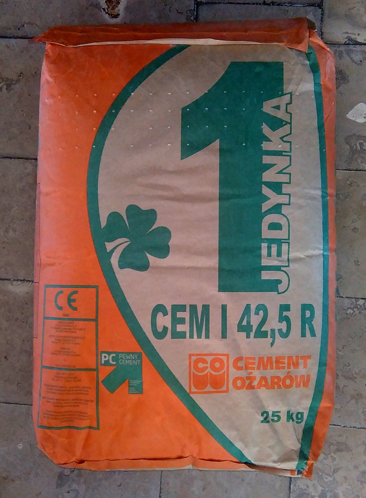

Engineered specifically for cement and dry powder packaging — block-bottom, pinch-bottom and valve bags with micro-perforated air-exhaust fabric for fast filling speeds, tamper-evident sealing, and maximum stacking integrity.
| Standard Sizes | 25 kg / 50 kg |
| Fabric Weight | 80 – 110 GSM |
| Bottom Style | Block bottom / pinch bottom / open mouth |
| Valve Type | Side valve / flush valve / self-closing |
| Micro-Perforations | Available for air-exhaust / deaeration |
| Lamination | PP or BOPP laminated exterior |
| Printing | Up to 6-colour flexographic |
| Compliance | BIS IS 11652 / IS 14252 as applicable |
| MOQ | 10,000 pieces |
Applications
Each configuration is optimised for different filling line speeds, closure requirements and brand presentation needs.
Square base for stable stacking on pallets. Self-closing side valve allows high-speed pneumatic filling. Preferred by large cement manufacturers.
Pinched and glued flat bottom. Suitable for semi-automatic filling lines. Widely used for wall putty, tile adhesive, and dry-mix products.
Traditional open top sack filled by spout and closed with double-stitched top seam. Economical option for smaller cement and building material producers.
Cement and dry powder filling lines face a key bottleneck: air trapped inside the bag during filling slows throughput and causes spillage. Our micro-perforated PP woven fabric solves this.
| Fabric GSM | 80 – 110 GSM |
| Warp & Weft | 10–14 × 10–14 strands/inch |
| Tape Denier | 900 – 1800 denier |
| Tensile Strength | ≥ 1,400 N/5cm (warp/weft) |
| Drop Test | 1.2m drop, 5 cycles |
| Standard | BIS IS 11652 / IS 14252 |